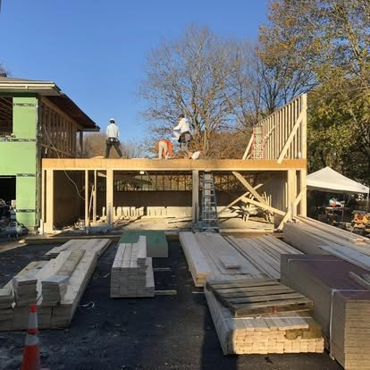

Permits for
remodeling
When you need a building permit in Massachusetts, how the process works, and why it protects your home.
Permits for remodeling in Massachusetts
Permits exist to keep work safe and code-compliant — and to protect your home’s value at resale. Here’s a plain-English overview of when you need one and how the process works in Massachusetts.
When a permit is typically required
Building permits are generally needed for additions, structural changes, decks, finished basements, window and door changes, and re-roofing, plus separate electrical and plumbing permits for that work. Cosmetic, like-for-like updates often don’t require one.
How the process works
Application
The contractor submits plans and scope to your town’s building department.
Approval
The building official reviews and issues the permit.
Inspections
Key stages (framing, electrical, plumbing, final) are inspected as the work progresses.
Sign-off
A final inspection confirms the work meets code.
Why it matters
Unpermitted work can cause problems at resale, with insurance, and with safety. As a licensed GC, we handle permitting and inspections so your project is correct and documented. Requirements vary by town — we confirm the specifics for your location.
Frequently asked
Do I always need a permit to remodel?+
Not always. Like-for-like cosmetic work (paint, flooring, cabinet swaps) often doesn’t, but structural, electrical, plumbing, additions, decks, and window changes generally do. We advise on each project.
Who pulls the permit — me or the contractor?+
A licensed contractor should pull the permits for the work they perform. We handle permitting and coordinate inspections as part of the job.
Related guides
Let us handle the paperwork
Get a free estimate — permitting and inspections included in our scope.